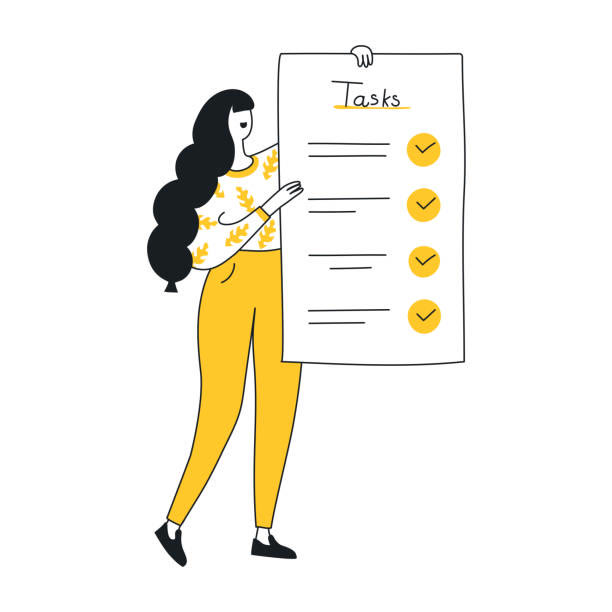

Priorize o que importa
Defina prioridades e prazos para manter o foco no que precisa da sua atenção primeiro.
Mais clareza para o seu dia
Organize suas prioridades, acompanhe cada etapa e veja suas tarefas avançarem em um só lugar.

Defina prioridades e prazos para manter o foco no que precisa da sua atenção primeiro.
Organize seu dia com foco